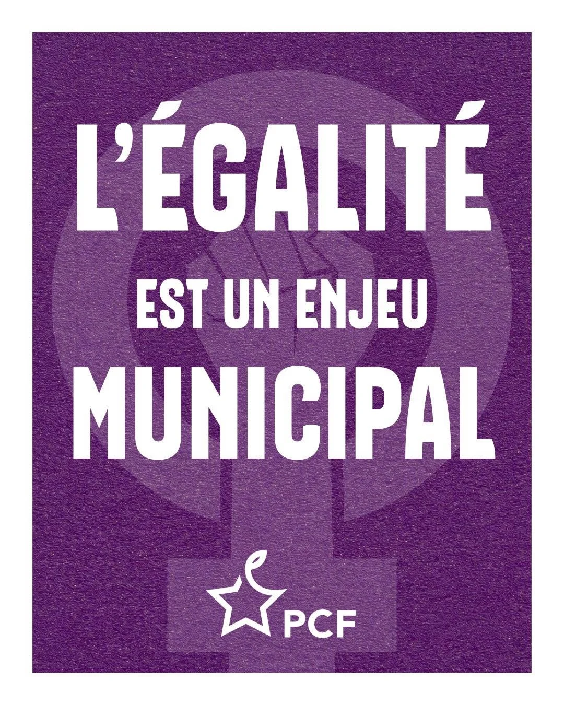
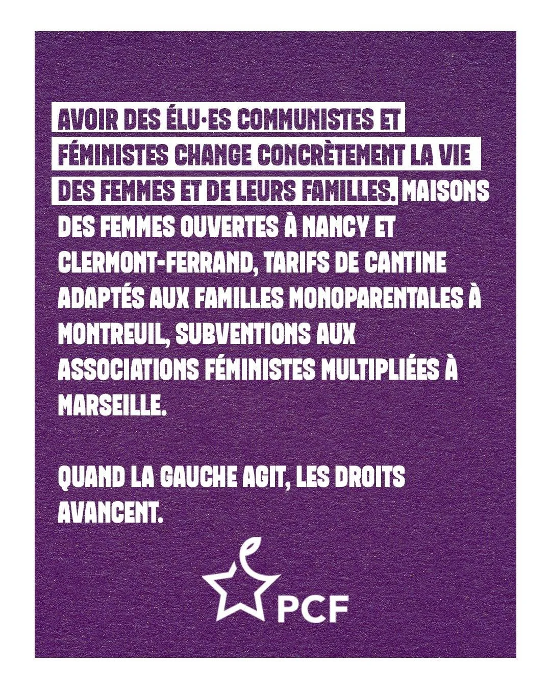
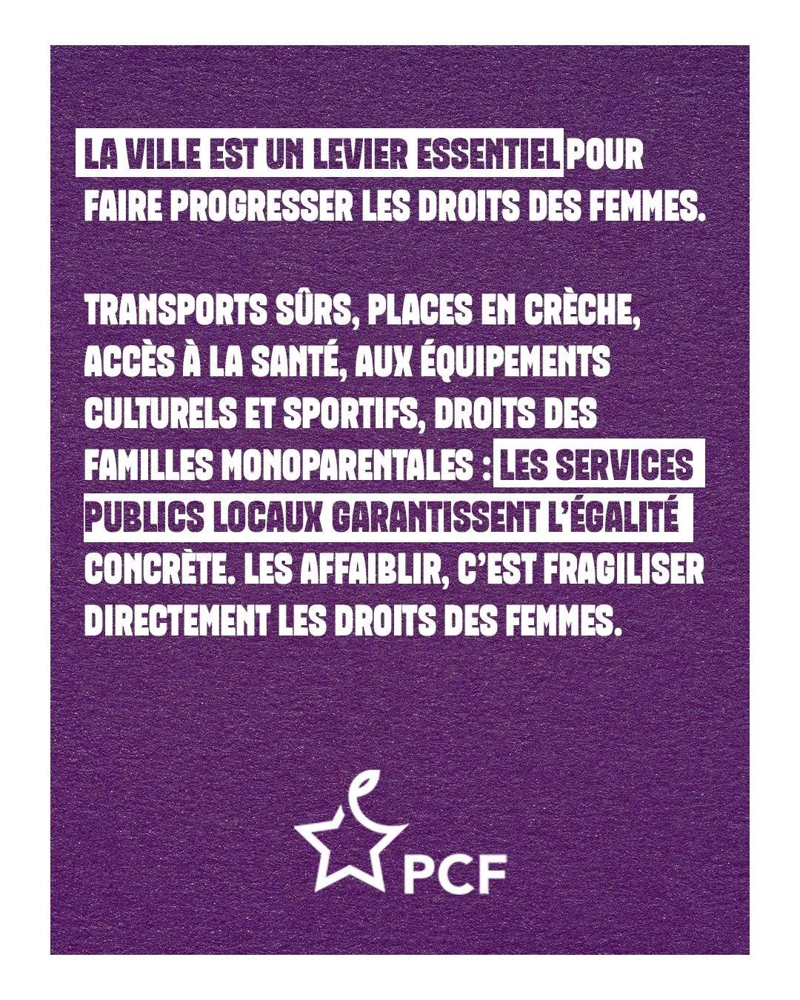

Publication relayée par le PCF 79
8 mars. Le PCF met en avant le rôle des services publics locaux
Date de mise à jour indiquée par Facebook · 6 mars 2026
Texte de la publication · PCF national
🟣 Le 8 mars, journée internationale de lutte pour les droits des femmes, nous rappelons une évidence : l’égalité se construit aussi dans nos villes.
Espaces communs partagés sûrs, accès à la santé, places en crèche, équipements culturels et sportifs, soutien aux familles monoparentales : les services publics locaux sont des leviers concrets pour l’égalité.
Partout où des élu·es communistes et féministes agissent, des avancées réelles voient le jour.
✊ Quand la gauche agit, les droits avancent.
📍 Le 8 mars, retrouvons-nous dans les mobilisations féministes partout en France, TOUTES dans la rue !



Sources
PCF national · publication relayée par le PCF 79 · bibliothèque Facebook · AR-0002-FB-00846
À lire aussi · 8 mars à Niort, le communiqué de la CGT, de la FSU et de Solidaires